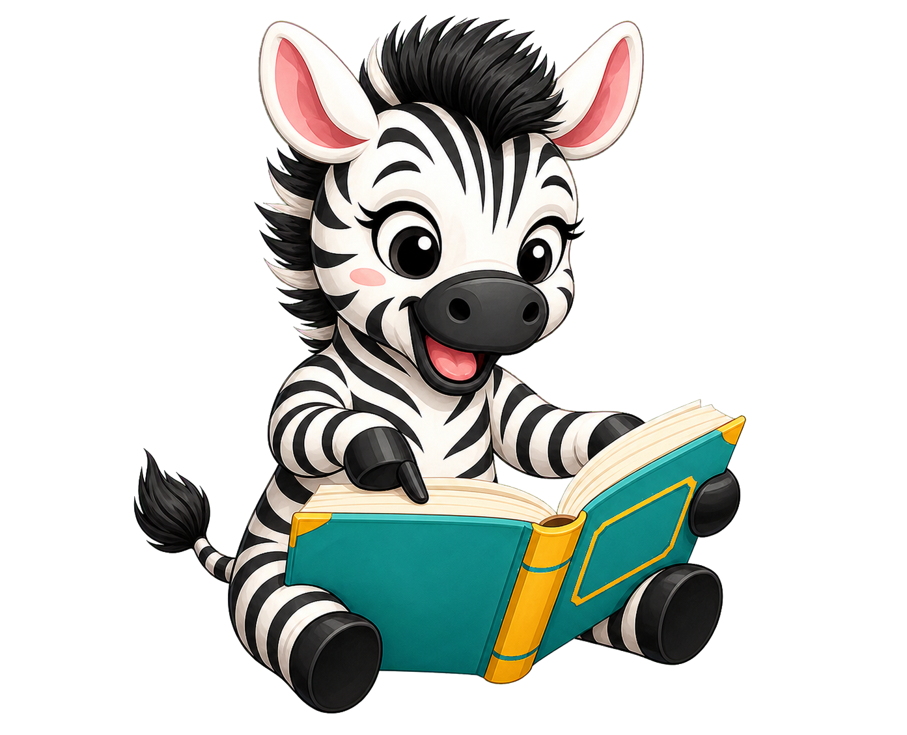

Wat wil je vandaag maken?
Kies één onderdeel. Zo blijft het scherm rustig en zie je alleen wat je nodig hebt.

Kies één onderdeel. Zo blijft het scherm rustig en zie je alleen wat je nodig hebt.
Kies links een leesdoel, oefenvorm en ondersteuning. Voeg daarna je eerste oefenblok toe.
Lees alle woorden samen. De woorden wisselen vanzelf en Zisa verrast jullie tussendoor met een beweging.
Straks verschijnt deze zebra tussen de woorden
Doe de beweging samen wanneer deze zebra tijdens het spel verschijnt.
Lees samen hardop
Beweegboost!
Pagina's voorbereiden